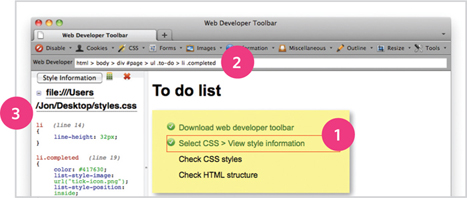

14
LISTS, TABLES AND FORMS
- Specifying bullet point styles
- Adding borders and backgrounds to tables
- Changing the appearance of form elements
There are several CSS properties that were created to work with specific types of HTML elements, such as lists, tables, and forms.
In this chapter you will learn how to:
- Specify the type of bullet point or numbering on lists
- Add borders and backgrounds to table cells
- Control the appearance of form controls
Together, these properties allow you to take finer control over specific parts of your pages.
BULLET POINT STYLES
list-style-type
The list-style-type property allows you to control the shape or style of a bullet point (also known as a marker).
It can be used on rules that apply to the <ol>, <ul>, and <li> elements.
UNORDERED LISTS
For an unordered list you can use the following values:
- none
- • disc
- circle
- square
ORDERED LISTS
For an ordered (numbered) list you can use the following values:
decimal
1 2 3
decimal-leading-zero
01 02 03
lower-alpha
a b c
upper-alpha
A B C
lower-roman
i. ii. iii.
upper-roman
I II III
IMAGES FOR BULLETS
list-style-image
You can specify an image to act as a bullet point using the list-style-image property.
The value starts with the letters url and is followed by a pair of parentheses. Inside the parentheses, the path to the image is given inside double quotes.
This property can be used on rules that apply to the <ul> and <li> elements.
The example on this page also shows the use of the margin property to increase the vertical gap between each item in the list.
POSITIONING THE MARKER
list-style-position
Lists are indented into the page by default and the list-style-position property indicates whether the marker should appear on the inside or the outside of the box containing the main points.
This property can take one of two values:
outside
The marker sits to the left of the block of text. (This is the default behaviour if this property is not used.)
inside
The marker sits inside the box of text (which is indented).
In the example shown, the width of the list has been limited to 150 pixels. This ensures that the text wraps onto a new line so you can see how the value of inside sits the bullet inside the first line of text.
A margin has been added to each list item so that there is a clear gap between each.
LIST SHORTHAND
list-style
As with several of the other CSS properties, there is a property that acts as a shorthand for list styles. It is called list-style, and it allows you to express the markers' style, image and position properties in any order.
TABLE PROPERTIES
You have already met several properties that are commonly used with tables. Here we will put them together in a single example using the following:
width to set the width of the table
padding to set the space between the border of each table cell and its content
text-transform to convert the content of the table headers to uppercase
letter-spacing, font-size to add additional styling to the content of the table headers
border-top, border-bottom to set borders above and below the table headers
text-align to align the writing to the left of some table cells and to the right of the others
background-color to change the background color of the alternating table rows
:hover to highlight a table row when a user's mouse goes over it
Here are some tips for styling tables to ensure they are clean and easy to follow:
GIVE CELLS PADDING
If the text in a table cell either touches a border (or another cell), it becomes much harder to read. Adding padding helps to improve readability.
DISTINGUISH HEADINGS
Putting all table headings in bold (the default style for the <th> element) makes them easier to read. You can also make headings uppercase and then either add a background color or an underline to clearly distinguish them from content.
SHADE ALTERNATE ROWS
Shading every other row can help users follow along the lines. Use a subtle distinction from the normal color of the rows to keep the table looking clean.
ALIGN NUMERALS
You can use the text-align property to align the content of any column that contains numbers to the right, so that large numbers are clearly distinguished from smaller ones.
ONLINE EXTRA
There are more examples of using CSS to style tables in the tools section of the website.
BORDER ON EMPTY CELLS
empty-cells

If you have empty cells in your table, then you can use the empty-cells property to specify whether or not their borders should be shown.
Since browsers treat empty cells in different ways, if you want to explicitly show or hide borders on any empty cells then you should use this property.
It can take one of three values:
show
This shows the borders of any empty cells.
hide
This hides the borders of any empty cells.
inherit
If you have one table nested inside another, the inherit value instructs the table cells to obey the rules of the containing table.
In the first table on the left, you can see that the border of the empty cell is showing. In the second table, it is hidden.
GAPS BETWEEN CELLS
border-spacing, border-collapse
The border-spacing property allows you to control the distance between adjacent cells. By default, browsers often leave a small gap between each table cell, so if you want to increase or decrease this space then the border-spacing property allows you to control the gap.
The value of this property is usually specified in pixels. You can specify two values if desired to specify separate numbers for horizontal and vertical spacing.
When a border has been used on table cells, where two cells meet, the width of lines would be twice that of the outside edges. It is possible to collapse adjacent borders to prevent this using the border-collapse property. Possible values are:
collapse
Borders are collapsed into a single border where possible. (border-spacing will be ignored and cells pushed together, and empty-cells properties will be ignored.)
separate
Borders are detached from each other. (border-spacing and empty-cells will be obeyed.)
STYLING FORMS
Nobody I know enjoys filling in forms, so if you can make yours look more attractive and easier to use, more people are likely to fill it in. Also, when you come to look at a form in a few different browsers (as shown on the right), you will see that each browser displays them differently.
CSS is commonly used to control the appearance of form elements. This is both to make them more attractive and to make them more consistent across different browsers
It is most common to style:
- Text inputs and text areas
- Submit buttons
- Labels on forms, to get the form controls to align nicely
In the coming pages you will see how to control these with CSS.
Styling text inputs and submit buttons is fairly easy. It is harder to get select boxes, radio buttons, and checkboxes to look consistent across all browsers.
To achieve this, you might like to download the CSS files available at http://formalize.me. The author of this website has done the hard work of making forms look consistent across browsers. Although the solution incorporates JavaScript, no prior knowledge of this is needed in order to implement the code.
STYLING TEXT INPUTS
This example demonstrates the CSS properties commonly used with text inputs, most of which you have already met.
font-size sets the size of the text entered by the user.
color sets the text color, and background-color sets the background color of the input.
border adds a border around the edge of the input box, and border-radius can be used to create rounded corners (for browsers that support this property).
The :focus pseudo-class is used to change the background color of the text input when it is being used, and the :hover psuedo-class applies the same styles when the user hovers over them.
background-image adds a background image to the box. Because there is a different image for each input, we are using an attribute selector looking for the value of the id attribute on each input.
You will learn more about background images and how to position them in Chapter 16.
STYLING SUBMIT BUTTONS
Here are some properties that can be used to style submit buttons. This example builds on the one in the previous page, and the submit button inherits the styles set for the <input> element on the last page.
color is used to change the color of the text on the button.
text-shadow can give a 3D look to the text in browsers that support this property.
border-bottom has been used to make the bottom border of the button slightly thicker, which gives it a more 3D feel.
background-color can make the submit button stand out from other items around it. (Creating a consistent style for all buttons helps users understand how they should interact with the site.) A gradient background has been added for browsers that support gradients. Gradients are covered on page 419.
The :hover pseudo-class has been used to change the appearance of the button when the user hovers over it. In this case, the background changes, the text gets darker, and the thicker border is applied to the top of the button.
STYLING FIELDSETS & LEGENDS
Fieldsets are particularly helpful in determining the edges of a form. In a long form they can help group together related information within it.
The legend is used to indicate what information is required in the fieldset.
Properties commonly used with these two elements include:
width is used to control the width of the fieldset. In this example, the width of the fieldset forces the form elements to wrap onto a new line in the correct place. (If it were wider, the items might sit on one line.)
color is used to control the color of text.
background-color is used to change the color behind these items.
border is used to control the appearance of the border around the fieldset and/or legend.
border-radius is used to soften the edges of these elements in browsers that support this property.
padding can be used to add space inside these elements.
ALIGNING FORM CONTROLS: PROBLEM
Labels for form elements are often different lengths, which means that the form controls will not appear in a straight line. This is demonstrated in the example on the right (without CSS applied to the form controls).
In this form, each topic we ask the user about is placed inside a <div> element to ensure that each question appears on a new line. It is easier for users to fill in a form if the form controls are aligned in a straight vertical line. The CSS on the opposite page addresses this.
If you look at where we ask users their gender, the two radio buttons each have their own <label> (one saying male and another saying female). A <span> element has been added to the title which will help align these controls.
On the previous page we saw another technique to align form elements. When the form only contains text inputs, by setting all of the text inputs to be the same width, as well as aligning all of the form content to the right, the fields line up and the labels are in a consistent place. For more complex forms, you will need a solution more like the one shown on these pages.
ALIGNING FORM CONTROLS: SOLUTION
Each row of the form has a title telling users what they need to enter. For the text inputs, the title is in the <label> element. For the radio buttons, the title is in a <span> element. Both have a class attribute with a value of title.

We can use a property called float to move the titles to the left of the page. (The float property is covered in greater detail on pages 370-376.)
By setting the width property on those elements, we know that the titles will each take up the same width. Therefore, the form controls next to them will line up.
The text-align property is used to align the titles to the right, and padding is used to make sure there is a gap between the text in the title boxes and the form controls.
Styles are also applied to the <div> elements that contain each row of the form (fixing their width and creating vertical space between each row). The submit button is also aligned to the right.
CURSOR STYLES
cursor
The cursor property allows you to control the type of mouse cursor that should be displayed to users.
For example, on a form you might set the cursor to be a hand when the user hovers over it.
Here are the most commonly used values for this property:
auto
crosshair
default
pointer
move
text
wait
help
url(“cursor.gif”);
You should only use these values to add helpful information for users in places they would expect to see that cursor. (For example, using a crosshair on a link might confuse users because they are not used to seeing it.)
WEB DEVELOPER TOOLBAR
This helpful extension for Firefox and Chrome provides tools to show you the CSS styles that apply to an element when you hover over it, along with the structure of the HTML.
Download this tool from: www.chrispederick.com/work/web-developer
To see the CSS styles and HTML structure of a web page, go to the CSS menu of the Web Developer Toolbar and pick View Style Information.

1: OUTLINES
When you hover over an element, a red outline will be drawn around it, showing you how much space the element takes up.
2 STRUCTURE
While you are hovering over an element, the structure will be shown at the top of the window. Here you can see the <li> element has a class of completed, inside a <ul> with a class called to-do. The list is inside a <div> element with an id of page, and this sits inside the <body> and <html> elements.
This can be very helpful when writing CSS selectors to help you target the right element.
3: CSS STYLES
When hovering over an element, click with your mouse to display the CSS. You will be shown the rules that apply to that element (and the line they are on). Above the rules, you can see the name of the style sheet (and the path to it).
This helps check which styles are being applied to an element. You can use it on code for your own site or when you want to see what styles someone else is using on their site.
This tool also allows you to change the screen size, validate your HTML and CSS code, and turn off images.
EXAMPLE LISTS, TABLES AND FORMS
This example demonstrates several of the CSS properties we have met in this chapter to control the presentation of lists, tables, and forms.
For the list of free poetry events near the start of the page, the bullet points are styled with an image. The space between each list item is increased using the line-height property.
For the table, the gaps between cells are removed using the border-spacing property. Font size is set for the <td> and <th> elements as they do not inherit their size from parent elements.
The head of the table has a darker background, light text, and a dark 2-pixel line between it and the table content. Rounded corners on the table header are created using the :first-child and :last-child pseudo classes (for browsers that support rounded corners).
Alternate rows of the table have different shading, and texture is added with different borders on each side of the cell.
For the form, the related form controls are put in a <fieldset> element. The labels of the form controls on the left also use the float property to ensure the form controls are vertically aligned.
When the text boxes of the form receive focus, or the user hovers over it, the background color and border colors change. The submit button has also been styled to make it clear where people should submit the form.
EXAMPLE LISTS, TABLES AND FORMS
<!DOCTYPE html> <html> <head> <title>Lists, Tables and Forms</title> <style type=“text/css”> body { font-family: Arial, Verdana, sans-serif; font-size: 90%; color: #666; background-color: #f8f8f8;} li { list-style-image: url(“images/icon-plus.png”); line-height: 1.6em;} table { border-spacing: 0px;} th, td { padding: 5px 30px 5px 10px; border-spacing: 0px; font-size: 90%; margin: 0px;} th, td { text-align: left; background-color: #e0e9f0; border-top: 1px solid #f1f8fe; border-bottom: 1px solid #cbd2d8; border-right: 1px solid #cbd2d8;} tr.head th { color: #fff; background-color: #90b4d6; border-bottom: 2px solid #547ca0; border-right: 1px solid #749abe; border-top: 1px solid #90b4d6; text-align: center; text-shadow: −1px −1px 1px #666; letter-spacing: 0.15em;} td { text-shadow: 1px 1px 1px #fff;}
tr.even td, tr.even th { background-color: #e8eff5;} tr.head th:first-child { -webkit-border-top-left-radius: 5px; -moz-border-radius-topleft: 5px; border-top-left-radius: 5px;} tr.head th:last-child { -webkit-border-top-right-radius: 5px; -moz-border-radius-topright: 5px; border-top-right-radius: 5px;} fieldset { width: 310px; margin-top: 20px; border: 1px solid #d6d6d6; background-color: #ffffff; line-height: 1.6em;} legend { font-style:italic; color:#666666;} input[type=“text”] { width: 120px; border: 1px solid #d6d6d6; padding: 2px; outline: none;} input[type=“text”]:focus, input[type=“text”]:hover { background-color: #d0e2f0; border: 1px solid #999;} input[type=“submit”] { border: 1px solid #006633; background-color: #009966; color: #FFFFFF; border-radius: 5px; padding: 5px; margin-top: 10px;} input[type=“submit”]:hover { border: 1px solid #006633;
background-color: #00CC33; color: #FFFFFF; cursor: pointer;} .title { float: left; width: 160px; clear: left;} .submit { width: 310px; text-align: right;} </style> </head> <body> <h1>Poetry Workshops</h1> <p>We will be conducting a number of poetry workshops and symposiums throughout the year.</p> <p>Please note that the following events are free to members:</p> <ul> <li>A Poetic Perspective</li> <li>Walt Whitman at War</li> <li>Found Poems and Outsider Poetry</li> </ul> <table> <tr class=“head”> <th></th> <th>New York</th> <th>Chicago</th> <th>San Francisco</th> </tr> <tr> <th>A Poetic Perspective</th> <td>Sat, 4 Feb 2012<br />11am - 2pm</td> <td>Sat, 3 Mar 2012<br />11am - 2pm</td> <td>Sat, 17 Mar 2012<br />11am - 2pm</td> </tr> <tr class=“even”> <th>Walt Whitman at War</th>
<td>Sat, 7 Apr 2012<br />11am - 1pm</td> <td>Sat, 5 May 2012<br />11am - 1pm</td> <td>Sat, 19 May 2012<br />11am - 1pm</td> </tr> <tr> <th>Found Poems & Outsider Poetry</th> <td>Sat, 9 Jun 2012<br />11am - 2pm</td> <td>Sat, 7 Jul 2012<br />11am - 2pm</td> <td>Sat, 21 Jul 2012<br />11am - 2pm</td> </tr> <tr class=“even”> <th>Natural Death: An Exploration</th> <td>Sat, 4 Aug 2012<br />11am - 4pm</td> <td>Sat, 8 Sep 2012<br />11am - 4pm</td> <td>Sat, 15 Sep 2012<br />11am - 4pm</td> </tr> </table> <form action=“http://www.example.com/form.php” method=“get”> <fieldset> <legend>Register your interest</legend> <p><label class=“title” for=“name”>Your name:</label> <input type=“text” name=“name” id=“name”><br /> <label class=“title” for=“email”>Your email:</label> <input type=“text” name=“email” id=“email”></p> <p><label for=“location” class=“title”>Your closest center:</label> <select name=“location” id=“location”> <option value=“ny”>New York</option> <option value=“il”>Chicago</option> <option value=“ca”>San Francisco</option> </select></p> <span class=“title”>Are you a member?</span> <label><input type=“radio” name=“member” value=“yes” /> Yes</label> <label><input type=“radio” name=“member” value=“no” /> No</label></p> </fieldset> <div class=“submit”><input type=“submit” value=“Register” /></div> </form> </body> </html>
SUMMARY LISTS, TABLES AND FORMS
- In addition to the CSS properties covered in other chapters which work with the contents of all elements, there are several others that are specifically used to control the appearance of lists, tables, and forms.
- List markers can be given different appearances using the list-style-type and list-style image properties.
- Table cells can have different borders and spacing in different browsers, but there are properties you can use to control them and make them more consistent.
- Forms are easier to use if the form controls are vertically aligned using CSS.
- Forms benefit from styles that make them feel more interactive.